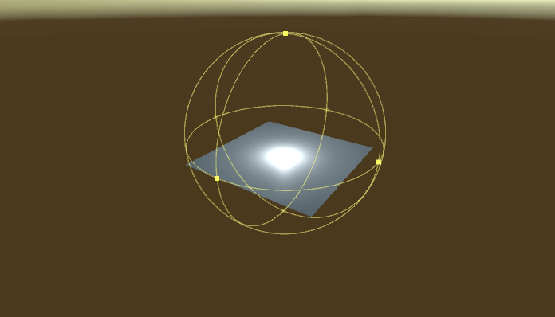

#Gizmos Docs ##Overview
Runtime Gizmos are the runtime 3D controls that are used to manipulate items in the scene. Unlike transform handles, gizmos does not modify the transformation of objects. Instead, they are used to modify colliders, bounding boxes and properties of light and audio sources. All gizmos, their base classes, rendering classes and shaders can be found in /Battlehub/RTEditor/Runtime/RTGizmos and /Battlehub/RTEditor/Content/Runtime/RTGizmos folders.
Note
In this section, Runtime Gizmos is simply called "gizmos".
##Getting Started
Here are several simple steps to get started with gizmos:
- Create a Cube using Create->3D Object->Cube
- Select Cube.
- Add Assets BoxColliderGizmo component.
- Hit Play.
- Use mouse left-click + drag to resize Box Collider Gizmo.
- Note that
CenterandSizeproperties of Box Collider have been changed.

##Base Gizmo Source code of Base Gizmo can be found in Battlehub/RTEditor/Runtime/RTGizmos/BaseGizmo.cs. This is the base class of Box Gizmo, Sphere Gizmo, Capsule Gizmo and Cone Gizmo. Therefore all these gizmos have following settings:
Grid Size– step size used in unit snapping mode (default: 1.0).Line Color– color of line.Handles Color– color of handle (small quad).Selection Color– color of selected handle.Enable Undo– if set to true then gizmo will write all changes to undo stack (default: true).Unit Snap Key– key switching gizmo to unit snapping mode.Target– target object reference;
##Box Gizmo
Located in Battlehub/RTEditor/Runtime/RTGizmos/BoxGizmo.cs.
Base class for all gizmos that have box shape:
##Sphere Gizmo
Located in Battlehub/RTEditor/Runtime/RTGizmos/SphereGizmo.cs.
Base class for all gizmos that have sphere shape:
##Capsule Gizmo
Located in Battlehub/RTEditor/Runtime/RTGizmos/CapsuleGizmo.cs.
Base class for all gizmos that have capsule shape:
##Cone Gizmo
Located in Battlehub/RTEditor/Runtime/RTGizmos/ConeGizmo.cs. Base class for all gizmos that have cone shape:
##Box Collider Gizmo
Located in Battlehub/RTEditor/Runtime/RTGizmos/BoxColliderGizmo.cs.
Box Collider Gizmo can be added to object with Box Collider:
- Create Game Object with Box Collider.
- Add Box Collider Gizmo component.

##Sphere Collider Gizmo
Located in Battlehub/RTEditor/Runtime/RTGizmos/SphereColliderGizmo.cs.
Sphere Collider Gizmo can be added to object with Sphere Collider:
- Create Game Object with Sphere Collider.
- Add Sphere Collider Gizmo component.

##Capsule Collider Gizmo
Located in Battlehub/RTEditor/Runtime/RTGizmos/CapsuleColliderGizmo.cs.
Capsule Collider Gizmo can be added to object with Capsule Collider:
- Create Game Object with Capsule Collider.
- Add Capsule Collider Gizmo component.

##Point Light Gizmo
Located in Battlehub/RTEditor/Runtime/RTGizmos/PointLightGizmo.cs.
Point Light Gizmo can be added to Point Light:
- Create Point Light.
- Add LightGizmo component.

##Spot Light Gizmo
Located in Battlehub/RTEditor/Runtime/RTGizmos/SpotLightGizmo.cs.
Spot Light Gizmo can be added to Spot Light:
- Create Spot Light.
- Add LightGizmo component.

##Directional Light Gizmo
Located in Battlehub/RTEditor/Runtime/RTGizmos/DirectionalLightGizmo.cs. Directional Light Gizmo can be added to Directional Light
- Create Directional Light.
- Add Light Gizmo component.

##Audio Source Gizmo
Located in Battlehub/RTEditor/Runtime/RTGizmos/AudioSourceGizmo.cs.
Audio Source Gizmo can be added to Audio Source
- Create Audio Source.
- Add Audio Source Gizmo component.

##Audio Reverb Zone Gizmo
Located in Battlehub/RTEditor/Runtime/RTGizmos/AudioReverbZoneGizmo.cs.
Same as AudioSouce Gizmo
##Skinned Mesh Renderer Gizmo
Located in Battlehub/RTEditor/Runtime/RTGizmos/SkinnedMeshRendererGizmo.cs.
Skinned Mesh Renderer Gizmo can be added to object with SkinnedMesh
- Create GameObject with SkinnedMeshRenderer.
- Add Skinned Mesh Renderer Gizmo component.